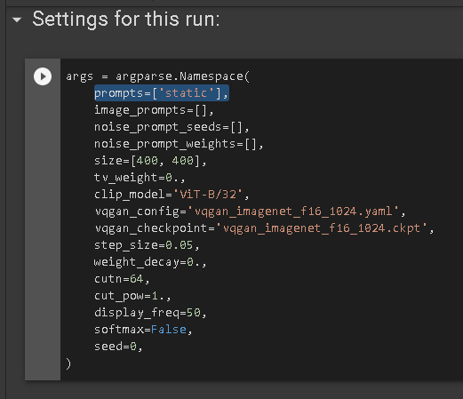

¿Los profesionales deberían intervenir siempre de acuerdo a su ideario? sea suyo u obtenido, pero bajo una perspectiva individual bajo las circunstancias y toma de decisiones más que seguir reglas que son ley o sugerencias consideradas éticas en la deontología. Si bien cada persona tiene sus perspectivas e idearios individuales, la sociedad progresa en conjunto, pero a la vez la ética y deontología nos dicen que están sobre la ley y posiblemente son mejores que esta si se aplican correctamente, entonces habría que obrar de acuerdo a nuestras máximas individuales siempre y cuando la situación amerite una mejor solución al problema considerando o no las consecuencias con el tiempo y recursos que tendríamos para reaccionar.
Siempre habrán recursos y consecuencias que pagar por cada acción, si la situación nos lo permite podríamos utilizar técnicas del utilitarismo como coste-beneficio, asumiendo diversos recursos. Las técnicas, ética y deontología deben evolucionar a la par con la evolución de las profesiones en el tiempo y no ser burocráticos ni paradigmas inamovibles, ya que la sociedad no es así. Existen ejemplos de paradojas y “dilemas” de falsa dicotomía ampliamente conocidas como: el experimento mental del tranvía: “Un tranvía corre fuera de control por una vía. En su camino se hallan cinco personas atadas a la vía por un filósofo malvado. Afortunadamente, es posible accionar un botón que encaminará al tranvía por una vía diferente, por desgracia, hay otra persona atada a ésta. ¿Debería pulsarse el botón?”
Pero en la realidad tenemos situaciones igual o más complejas que en la fantasía como médicos evaluando a quienes tienen factibilidad de salvar, por la gran cantidad de enfermos.
La Filosofía organizacional, como otro medio para llegar al fin, ligada a: Planes estratégicos, MOF(manuales de organización y funciones) no debe ser solamente: misión, visión, valores, etc, debe ser dinámica, en constante mejora y cambio para no quedar en una estática organizacional no solo como documento sino que se termina traduciéndose en el funcionamiento de la organización y su percepción al público, esto pueden o no saberlo las organizaciones, pero como humanos imperfectos con negatividad estamos atados a la mediocridad. Generalmente estos documentos o descripciones se crean iniciada la empresa o en fechas definidas luego de un periodo, cómo si esas fueran las mejores fechas, como un documento más, por obligación o porque los demás lo hacen, incluso no se crean de la mejor manera, sin siquiera entender los significados de: filosofía organizacional, misión, visión, valores, y el verdadero porqué de: sus objetivos, metas, reglas, procedimientos, procesos, políticas internas y spots publicitarios.
Siguiendo sobre la estática profesional y organizacional, hablemos de la Universidad organizaciones ineficientes que actualizan sus planes de estudio cada ciertos años, cuando los conocimientos evolucionan a frecuencias mayores como diariamente cuando se publican investigaciones sobre la profesión, pero “estables” y excusando que: explican fundamentos de la profesión, enseñan sobre investigación, dan conocimientos generales y tienen acceso a organizaciones o validez de tus conocimientos, como el burocrático estado y organizaciones tradicionales. Pero no existe mayor validez de tus conocimientos que los conocimientos mismos, su aplicación a los conocimientos y la enseñanza o comunicación de estos; las buenas organizaciones valoran más: tus conocimientos, portafolios con proyectos aplicados, investigaciones o comunicaciones realizadas que tus papeles.
Esta estática probablemente esté ligada a la mediocridad o estabilidad que se busca o perpetúa. Con otras frases estúpidas del tipo: “zapatero a su zapato”, “si lo deseas mucho lo conseguirás” o “ya llegará el bien” sin trabajar para que suceda o haciéndolo, pero no teniendo conocimiento de que quizás no solo con eso baste para mejorar.
Igualmente hay que tener en cuenta que el profesional ha de tener en claro qué es lo que le compete y qué no. Tomar en cuenta la interconexión de profesiones y la dificultad para deslindar campos de acción. Alguien que estudie una profesión no quiere decir que solo conozco dicha profesión o que tan siquiera conozca su profesión, a lo que me refiero es que debemos conocer nuestras capacidades y límites así como los demás y nuevamente no guiarnos de cosas simplistas como una etiqueta más en un documento o pedazo de papel siendo responsables como profesionales respecto a sí mismos, a comunidades y a la sociedad.
Yo escribo esto sin tener profesión en: filosofía, psicología, ciencia, ni ninguna ciencia social. Esperaría que dichos profesionales me critiquen o ayuden a mejorar mi contenido, pero es importante la sinceridad y decir que informo esto porque con los pocos muchos conocimientos que obtengo para retener mi aprendizaje y ser de apoyo para la sociedad.
En mi profesión, ingeniería de sistemas, es muy común el dinamismo entre conocimientos y profesiones (diseñadores, marketers, administradores, financieros, demás ingenierías), si creas equipos multidisciplinarios enfocados por objetivos tendrás mejores resultados que equipos monótonos y homogéneos que piensen similar, lo mismo pasa con los conocimientos, hay que ser capaces de tomar interés y acción para obtener conocimientos multidisciplinarios para obtener mejores resultados.
El Código Deontológico debe ser socializado para ser conocido por la sociedad y, en concreto, por los usuarios de los servicios para que puedan verse las profesiones seriamente.
También es posible que: no haya correlación entre la existencia de un código deontológico en una profesión y la calidad de los servicios, no sea considerado como propio sino como algo impuesto, como mero requisito para obtener la facultación para ejercer la profesión, como excusa de cobro, para darles sentido de pertenencia a una comunidad, sea inoperante en la práctica, algo decorativo, un adorno y que suscita consideración y respeto, autopropagandas irreales, sin efecto práctico.
También lo ha sido de cerrazón para evitar todo tipo de “intrusismo”, cuando como ya mencioné alguien puede saber más de una profesión sin haberla llevado en una universidad, pero siempre y cuando hay que ser conscientes en los conocimientos que se tienen. En ciertas profesiones es difícil determinar límites, amparando incluso abusos, en vez de protección o justicia.
Grupos influyentes y poderosos encargados de coartar, en vez de estimular, el debate público, a través del código se ponen límites al avance y al cambio. Una profesión es dinámica y cambiante; un problema es dinámico, se presenta con otros problemas entrelazados; una situación en la que se comienza a intervenir, puede tener otros matices mañana e incluso ser muy diferente al finalizar la intervención. Por consiguiente, el código deontológico debe ser abierto, no coercitivo, sino orientador, el código no puede ser, en definitiva, un recetario cerrado y coactivo a la manera y estilo de los códigos civiles.
Imágen generada por una IA, dónde únicamente le pasas texto y genera imágenes. Puedes usarla gratis aquí:
https://colab.research.google.com/drive/15UwYDsnNeldJFHJ9NdgYBYeo6xPmSelP?usp=sharingSolo debes modificar esta línea de código:
